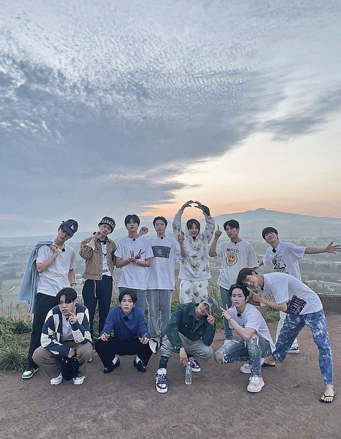

I love listening to music , especially Korean or Kpop music
and my favorite Kpop group is Treasure !
♡
Let me tell you more about Treasure !

Treasure (Korean: 트레저; Japanese: トレジャー;
stylized in all caps) is a South Korean boy band
formed in 2019 by YG Entertainment
and consists of 10 members: Choi Hyun-suk, Jihoon,
Yoshi, Junkyu, Yoon Jae-hyuk, Asahi, Doyoung, Haruto,
Park Jeong-woo, and So Jung-hwan.
♡
Its former members, Mashiho and Bang Ye-dam
departed from the group in November 2022.
♡
Treasure debuted with the single album
The First Step: Chapter One (2020)—
The first in a tetralogy of albums that collectively sold
over one million copies in five months.
🎧✩°｡⋆⸜ MY FAVOURITE TREASURE SONG
MY TREASURE
YAMAI
DARARI
☁️ SKY ☁️
Besides listening to K-pop songs
I also like to take pictures of the sky. Here I include some
of my favorite pictures of the sky
☁️